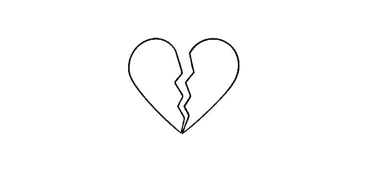

note: this article is 100% human-written.
this repetitive cycle of love, heartbreak, and anxiety that i keep getting embroiled into is painful.
this cycle usually ends with a terrible, gnawing, indescribable feeling that tends to consume me repeatedly, often without warning - right before the cycle starts from the top all over again. but what is this feeling, you ask?
i don't understand it. i don't like it. i want it to stop. and solving this problem requires a thorough reflection of my recurring thoughts, my romantic motivations, and my personal goals. trying to brush things under the carpet only works so long as i keep myself busy, and unfortunately, every time i am even remotely idle, that horrible feeling starts creeping in. seriously, i cannot be left alone or inactive.
and what better way to reflect, than to write a gratuitous article about my thoughts, or more accurately, an article that seeks to translate my "thoughts about thoughts" into words.
and before we begin - this is not to vilify anyone. this is just an honest attempt at understanding my personal thought process and behavior in romantic relationships.
the what: an analysis of the pattern
to start off, this feeling isn't unfamiliar.
there's a peculiar blueprint that my heart and mind seem to follow - with painful meticulousness - for almost every romantic experience i have had in the past 3 years.
stage 1: attraction
first, i am attracted to a boy. what usually draws me in? that depends on how cognitively stimulating our conversations are, how much care he shows for me, how much effort he puts into his work/his intelligence, or how closely he resembles my physical type (to be honest, more often than not these days, i tend to prioritize physical looks). this is ensued shortly by my mind building up an imaginary persona of said boy. i start daydreaming about the boy, start reliving the moments where these "attractive" behaviors are prominent in my mind, and hype up every small thing he did that draws me in to him. this is the honeymoon period - except that we aren't in a relationship.
it's all sunshine and rainbows here.
stage 2: attention
next, he shows me a little bit of attention. this is unsurprisingly a consistent behavior across all of them. sometimes, he sends me social media posts. sometimes, it's text messages at 5 am. sometimes, we meet up for something. but mind you - and this is an important factor - all of this has to be random, unexpected, and rare. no, high consistency and frequency will only fix all this mental turmoil effortlessly and for some godforsaken reason, my mind is averse to peace.
so it's breadcrumbing or no dice.
this deadly combination of attraction to the bare minimum qualities that are embodied by any decent human being and obsession with romantic entropy gets me excited about the possibility of a relationship with him.
it's exhilarating, it's addicting and once i get to this stage, there's no going back.
stage 3: that one incident
over time, my attraction grows into either genuine affection or fascination. and remember, this does not come uncoupled with anxiety, disappointment, or sadness. those feelings undoubtedly exist in every romantic endeavor i have had.
then that one incident occurs that "confirms" his attraction to me. that convinces me that maybe — just maybe — he is also smitten with me. it's usually either a planned rendezvous or an insignificant moment during our interaction. i dissect this fateful event in my mind, shredding it into every emotional strand that is humanly possible, and infer my made-up meanings from each of the said strands.
the final stage: "the feeling"
this is the stage i dread the most. the stage that warranted this 1022-word article in the first place and brings us to a full-circle moment. the stage that puts me into a seemingly endless spiral of unannounced anxiety, morning depression, or nighttime dejection.
he suddenly stops giving me that attention i tend to so dearly crave. suddenly, the inconsistency and rarity that attracts me to him in the first place starts becoming a source of pain.
i start eagerly anticipating his messages or literally any kind of contact. i start hoping to see him on the way to class, at the library, or at tech square. but nothing happens.
when i realize it's over, i start trying to console myself with the cliche words that most humans trying to mend their broken heart usually resort to: "you know, he really isn't that great after all, you're too good for him, plenty of fish in the sea, more time to focus on work, blah blah blah." this egotistical approach of convincing myself works for a bit, but i end up springing right back into the usual spiral.
this is the feeling. and it doesn't seem to end ever.
this formula of the four awful stages seems to have been memorized by my brain - rinse and repeat. and weirdly enough, there is a twisted comfort that it seems to find in following these precise stages for every single person.
final thoughts: why this feeling keeps coming back
what i have finally come to realize from this writing exercise is that there is a tug of war between a longing for consistency and an affinity for unpredictability in my mind. that is what causes so much emotional unrest.
not all hope is lost
okay, so now what? i have pinpointed the precise chain of behaviors, identified a pattern, and have penned down the exact problem. this is something that calls for a sincere endeavor for a permanent, long-lasting solution. that requires a deeper analysis of these behaviors/feelings. i have identified the what, but the why behind these feelings remains left to be investigated and i will require those answers to come up with a solution.
no one, including me, likes leaving things incomplete. but that's an article for another day. being aware of my mental process in my romantic endeavors within a 120-minute writing session is good enough for today.
for now, i return to smith charts and electromagnetic waves for my final exam tomorrow.